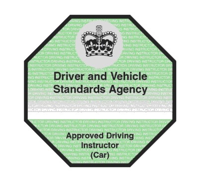
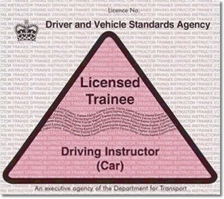

Instructor Training
Looking for a rewarding career with flexible hours and strong earning potential? Become a DVSA-approved driving instructor with Unique Driving School.
Why Choose Us?
- ORDIT-Approved trainer with a proven track record
- One-to-one training tailored to your schedule
- Comprehensive guidance through the ADI process
- We support you to become your own boss
What You’ll Learn
Our full training course includes:
- Instructional techniques and lesson planning
- Vehicle control and safety demonstrations
- Mock tests and real-world driving scenarios
- Professional development and confidence building
Pricing: £45/hr or £1700 for 40 hours of full support and training

